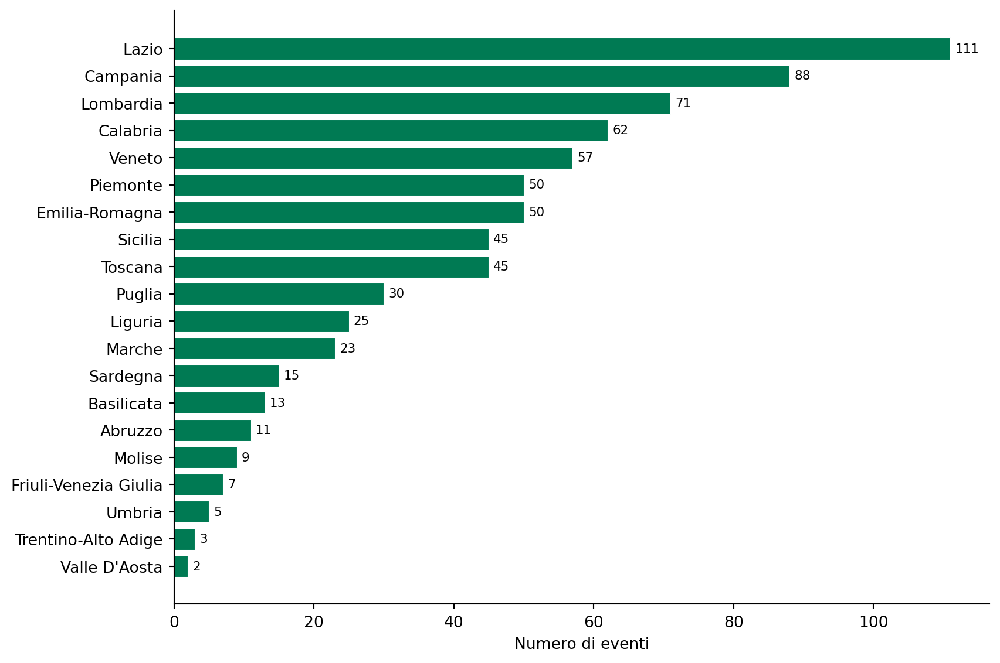
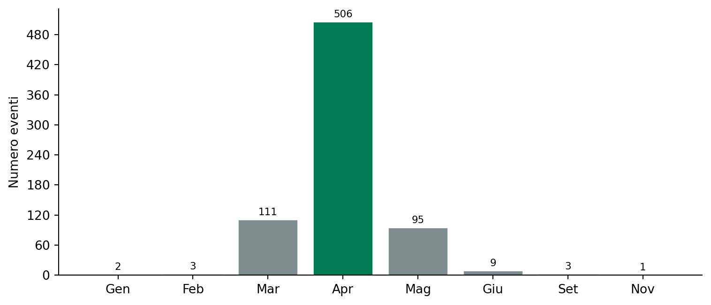
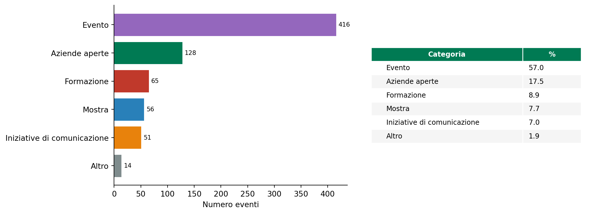
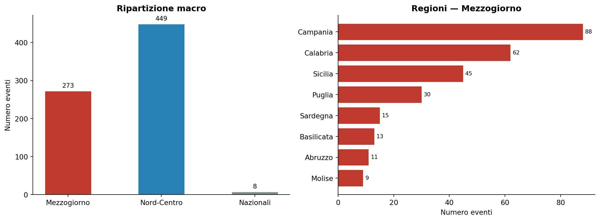

Giornata Nazionale del Made in Italy 2026
Analisi della distribuzione geografica, temporale e tematica degli eventi
Paolo Volterra ![]()
La Giornata Nazionale del Made in Italy (15 aprile) conta 730 eventi iscritti al portale MIMIT al 9 aprile 2026, distribuiti in 350 comuni e tutte le regioni. Il picco si concentra ad aprile (69 % degli eventi). Il Lazio guida per volume assoluto; il Mezzogiorno pesa il 37 % del totale nazionale, con Campania e Calabria prime tra le regioni meridionali.
Made in Italy, MIMIT, eventi, Mezzogiorno, economia reale
1 Il quadro generale
Al 9 aprile 2026 risultano iscritti 730 eventi su tutto il territorio nazionale, promossi da istituzioni, associazioni di categoria, imprese e scuole. La distribuzione copre 107 province e 350 comuni, con una forte concentrazione nei capoluoghi regionali.
Codice
overview = pd.DataFrame({
'Indicatore': [
'Totale eventi', 'Regioni', 'Province', 'Comuni',
'Primo evento', 'Ultimo evento',
'Durata mediana (giorni)', 'Durata media (giorni)',
],
'Valore': [
f"{len(df):,}",
str(df['regione'].nunique()),
str(df['provincia'].nunique()),
str(df['comune'].nunique()),
str(df['data_inizio'].min().date()),
str(df['data_fine'].max().date()),
f"{df['durata_gg'].median():.0f}",
f"{df['durata_gg'].mean():.1f}",
]
})
overview.style.hide(axis='index')| Indicatore | Valore |
|---|---|
| Totale eventi | 730 |
| Regioni | 21 |
| Province | 107 |
| Comuni | 350 |
| Primo evento | 2026-01-30 |
| Ultimo evento | 2026-12-31 |
| Durata mediana (giorni) | 7 |
| Durata media (giorni) | 23.6 |
Tabella 1: Principali indicatori — Giornata del Made in Italy 2026
La metà degli eventi dura al più 7 giorni; la media più alta (23,6 giorni) riflette alcune mostre o cicli formativi plurisettimanali che alzano la coda destra della distribuzione.
2 Distribuzione geografica
2.1 Per regione
Il Lazio (111 eventi) guida davanti a Campania (88) e Lombardia (71). La graduatoria riflette la densità di soggetti promotori — enti nazionali, associazioni di categoria, università — concentrati nelle grandi città.
Codice
reg = df[df['regione'] != 'Italia']['regione'].value_counts().sort_values()
fig, ax = plt.subplots(figsize=(9, 6))
bars = ax.barh(reg.index, reg.values, color=C_GREEN, edgecolor='white', linewidth=0.4)
ax.bar_label(bars, padding=3, fontsize=8)
ax.set_xlabel('Numero di eventi')
clean_ax(ax)
plt.tight_layout()
plt.savefig('OUT/fig_regioni.png', dpi=150, bbox_inches='tight')
plt.show()
Figura 1: Numero di eventi per regione (esclusi 8 eventi a copertura nazionale)
2.2 Top 10 comuni
Roma svetta con 96 eventi, più del triplo di Milano (28) e Torino (24). Tra i primi dieci figurano anche Modena (14) e Augusta (6, Sicilia) — segnale che la partecipazione non è solo metropolitana.
Codice
top10 = df['comune'].value_counts().head(10).reset_index()
top10.columns = ['Comune', 'Eventi']
top10['% sul totale'] = (top10['Eventi'] / len(df) * 100).round(1).astype(str) + ' %'
top10.style.hide(axis='index').bar(subset='Eventi', color=C_GREEN, vmin=0)| Comune | Eventi | % sul totale |
|---|---|---|
| Roma | 96 | 13.2 % |
| Milano | 28 | 3.8 % |
| Torino | 24 | 3.3 % |
| Firenze | 23 | 3.2 % |
| Napoli | 22 | 3.0 % |
| Modena | 14 | 1.9 % |
| Genova | 14 | 1.9 % |
| Venezia | 12 | 1.6 % |
| Caserta | 8 | 1.1 % |
| Bologna | 8 | 1.1 % |
Tabella 2: Top 10 comuni per numero di eventi
3 Distribuzione temporale
Il 15 aprile è la data istituzionale della Giornata; di conseguenza il 69 % degli eventi si concentra nel solo mese di aprile. Un secondo addensamento a marzo (111 eventi) indica anteprime e iniziative preparatorie; maggio (95) ospita le code.
Codice
mesi = df['mese_inizio'].value_counts().sort_index()
etichette = {
'2026-01': 'Gen', '2026-02': 'Feb', '2026-03': 'Mar', '2026-04': 'Apr',
'2026-05': 'Mag', '2026-06': 'Giu', '2026-09': 'Set', '2026-11': 'Nov',
}
x_labels = [etichette.get(str(m), str(m)) for m in mesi.index]
fig, ax = plt.subplots(figsize=(8, 3.5))
colors = [C_GREEN if str(m) == '2026-04' else C_GREY for m in mesi.index]
bars = ax.bar(x_labels, mesi.values, color=colors, edgecolor='white')
ax.bar_label(bars, padding=2, fontsize=8)
ax.set_ylabel('Numero eventi')
ax.yaxis.set_major_locator(mticker.MaxNLocator(integer=True))
clean_ax(ax)
plt.tight_layout()
plt.savefig('OUT/fig_mesi.png', dpi=150, bbox_inches='tight')
plt.show()
Figura 2: Eventi per mese di inizio
4 Tipologia degli eventi
La categoria Evento (convegni, fiere, manifestazioni) rappresenta il 57 % del totale. Le Aziende aperte sono seconde (18 %), confermando l’interesse per iniziative di open-factory. Formazione, Mostre e Iniziative di comunicazione coprono insieme il restante 24 %.
Codice
cat = df['categoria'].value_counts().sort_values()
cat_colors = [C_GREY, C_ORANGE, C_BLUE, C_RED, C_GREEN, '#9467bd']
fig, axes = plt.subplots(1, 2, figsize=(11, 4))
# bar orizzontale
bars = axes[0].barh(cat.index, cat.values,
color=cat_colors, edgecolor='white', linewidth=0.4)
axes[0].bar_label(bars, padding=3, fontsize=8)
axes[0].set_xlabel('Numero eventi')
clean_ax(axes[0])
# tabella %
cat_pct = (cat / len(df) * 100).round(1).sort_values(ascending=False)
tbl_data = pd.DataFrame({'Categoria': cat_pct.index, '%': cat_pct.values})
axes[1].axis('off')
tbl = axes[1].table(
cellText=tbl_data.values,
colLabels=tbl_data.columns,
cellLoc='left', loc='center',
colWidths=[0.65, 0.25],
)
tbl.auto_set_font_size(False)
tbl.set_fontsize(9)
tbl.scale(1, 1.4)
for (r, c), cell in tbl.get_celld().items():
if r == 0:
cell.set_facecolor(C_GREEN)
cell.set_text_props(color='white', fontweight='bold')
elif r % 2 == 0:
cell.set_facecolor('#f5f5f5')
cell.set_edgecolor('white')
plt.tight_layout()
plt.savefig('OUT/fig_categorie.png', dpi=150, bbox_inches='tight')
plt.show()
Figura 3: Composizione per categoria
5 Focus Mezzogiorno
5.1 Peso complessivo
Il Mezzogiorno contribuisce con 273 eventi (37,4 % del totale), una quota superiore al peso demografico della ripartizione (~34 %). Campania e Calabria guidano, insieme totalizzando oltre la metà degli eventi meridionali.
Codice
macro = pd.Series({
'Mezzogiorno': len(mez),
'Nord-Centro': len(nord),
'Nazionali': (df['regione'] == 'Italia').sum(),
})
reg_mez = mez['regione'].value_counts().sort_values()
fig, axes = plt.subplots(1, 2, figsize=(12, 4.5))
# macro
bars0 = axes[0].bar(macro.index, macro.values,
color=[C_RED, C_BLUE, C_GREY],
edgecolor='white', width=0.5)
axes[0].bar_label(bars0, padding=3, fontsize=9)
axes[0].set_ylabel('Numero eventi')
axes[0].set_title('Ripartizione macro', fontweight='bold')
clean_ax(axes[0])
# regioni Mezzogiorno
bars1 = axes[1].barh(reg_mez.index, reg_mez.values,
color=C_RED, edgecolor='white', linewidth=0.4)
axes[1].bar_label(bars1, padding=3, fontsize=8)
axes[1].set_xlabel('Numero eventi')
axes[1].set_title('Regioni — Mezzogiorno', fontweight='bold')
clean_ax(axes[1])
plt.tight_layout()
plt.savefig('OUT/fig_mezzogiorno.png', dpi=150, bbox_inches='tight')
plt.show()
Figura 4: Ripartizione geografica macro e dettaglio Mezzogiorno
5.2 Mix categorie: Mezzogiorno vs Nord-Centro
La struttura per categoria è simile tra le due ripartizioni, con una leggera prevalenza di Aziende aperte al Sud (19,4 % vs 17,0 %) e di Formazione al Nord-Centro (10,4 % vs 8,4 %).
Codice
cat_mez = mez['categoria'].value_counts(normalize=True).rename('Mezzogiorno')
cat_nord = nord['categoria'].value_counts(normalize=True).rename('Nord-Centro')
cat_comp = (pd.concat([cat_mez, cat_nord], axis=1).fillna(0) * 100).round(1)
cat_comp.index.name = 'Categoria'
cat_comp.reset_index().style.hide(axis='index').format(
{'Mezzogiorno': '{:.1f} %', 'Nord-Centro': '{:.1f} %'}
).bar(subset=['Mezzogiorno', 'Nord-Centro'],
color=[C_RED, C_BLUE], vmin=0, vmax=60)| Categoria | Mezzogiorno | Nord-Centro |
|---|---|---|
| Evento | 66.7 % | 51.7 % |
| Aziende aperte | 16.8 % | 18.3 % |
| Mostra | 7.0 % | 8.2 % |
| Formazione | 6.6 % | 10.2 % |
| Iniziative di comunicazione | 2.2 % | 9.8 % |
| Altro | 0.7 % | 1.8 % |
Tabella 3: Distribuzione % per categoria — Mezzogiorno vs Nord-Centro
6 Note metodologiche
I dati sono stati estratti dal portale mappe.mimit.gov.it il 9 aprile 2026 (730 record, CSV IN/made_in_italy.csv). La pulizia include: normalizzazione Title Case di regione/provincia/comune; correzione alias province; separazione degli 8 eventi a copertura nazionale (regione = “Italia”) dalle analisi geografiche sub-nazionali. La durata è calcolata come (data_fine − data_inizio) + 1; per 491 eventi data_fine è assente e la durata risulta NaN.